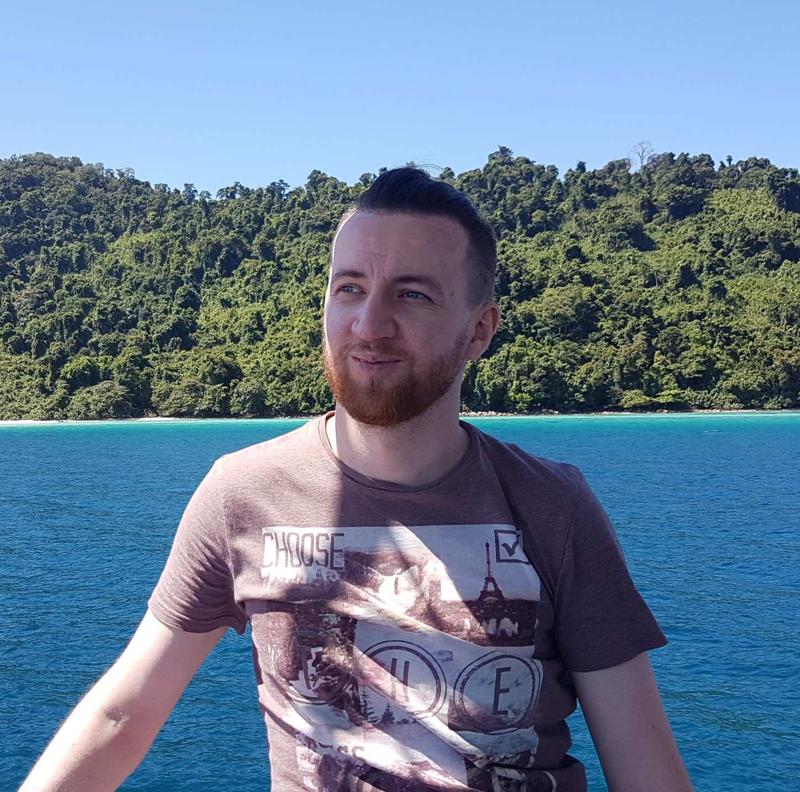

About me
My name is Evgeny Frolov. I'm the host of this blog, which has emerged as a result of a long-overdue desire to share interesting concepts, ideas, and findings in the area of my research. I talk more about my motivation and outlook in the first blog post.
Research interests
Currently, I work as a Research Scientist in the Scientific Computing group at Skoltech. My research interests primarily lie in the field of Recommender Systems, with a major focus on the development of new algorithms and methods. I'm fascinated by the beauty of math, and I always get excited when a practical problem finds its solution in an elegant mathematical form.
I have a Ph.D. in Data Science and Computational Engineering awarded by Skoltech. If you'd like to have a glimpse on my dissertation, I invite you to visit my thesis defense page. In short, I developed an efficient and straightforward algorithm for hybrid recommender systems using classical results from linear and multilinear (tensor) algebra. The work was supervised by prof. Ivan Oseledets.
Teaching
Apart from doing the research, I also love teaching. I served as a Teaching Assistant at the Numerical Linear Algebra course. I developed an introductory course on recommender systems for students at Skoltech, which also became a part of Skoltech's educational offering for companies. I sometimes work as an invited lecturer at various workshops and ML schools (e.g., ACAML). I also had a lot of fun developing a recommender systems part of the Coursera's Big Data for Data Engineers specialization.
Open-source projects
My favorite side project is Polara — a multi-purpose recommendation framework with rich functionality, fast execution, and convenient high-level API. From the very beginning it was envisioned as a tool to support openness and to ensure reproducibility of research. It also makes teaching and learning recommender systems easier. It turned out to be helpful for other practitioners and is even used within R&D departments of several companies.
Some random facts
I'm a Certified Open Water Diver. I love travelling and exploring wild nature. I enjoy snowboarding and active sports. I have some experience in Muay Thai. I used to play handball in the Olympic Reserve Sports School at my hometown.